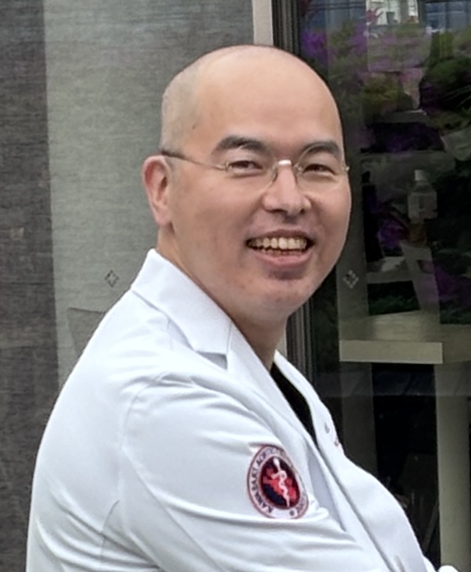

NEW
J Vasc Surg · 2025
Open TAAA in the Endovascular Era — Multidisciplinary Protocol
Commentary
はじめまして、大島 晋（おおしま すすむ）と申します。
川崎幸病院大動脈センターのチーフとして、日々胸部大動脈手術に携わっています。当センターでは年間約600件の胸部大動脈手術を行い、日本国内で最大規模の症例数を誇ります。2003年から2025年までの累計では8600件を超える手術を実施しており、私はこれまで約1700例を執刀医として担当してまいりました。
専門は大動脈外科、特に胸部大動脈瘤・解離の外科治療です。「患者さんの命を預かる神聖な仕事」という信念のもと、安全性・正確性・耐久性を最優先に、手術の標準化と技術の向上に努めています。
国内外の学会や医療機関で積極的に活動しています。YouTubeチャンネルでは大動脈吻合の技術を公開し、後進の参考にしていただいています。
私の手術哲学は「低侵襲とは単に切開を小さくすることではなく、患者さんにとって真に利益となるアプローチである」というものです。これからも学会発表・国際交流・技術発信を通じて、若手外科医の育成と大動脈外科の進歩に貢献していきたいと考えています。

大動脈疾患の専門治療を統括。心臓血管外科全体の責任者として臨床およびAIを活用したデータベース構築・臨床意思決定支援ツールの開発を主導。
2011年より同センターに勤務。2018年より主任医長として手術チームをリード。これまでに大動脈手術 約1,700例、心臓手術 約300例を執刀。
医師国家試験合格後、初期臨床研修を修了。
医学部医学科を卒業し、医師免許を取得。
川崎幸病院大動脈センターの累計8,000例超の手術データを Streamlit で構造化。生存解析・群間比較・予後予測を院内で実運用するシステムを自ら開発しています。
大動脈解離・胸腹部大動脈瘤の意思決定支援ツールを試作中。手術適応・術式選択・術後合併症リスクをデータ駆動で提示できる仕組みを目指しています。
胸腹部大動脈瘤に対する open repair の22年成績、Type A 解離の生涯管理、左開胸下大動脈手術における iNO 使用経験などを継続的に解析・発表しています。
川崎幸病院大動脈センターの手術症例データを一元管理する院内専用ツール。CSV取込みから生存解析・リスク因子解析・術式別成績比較まで、臨床研究に必要な統計処理をブラウザ上で即時実行できるよう自ら設計・開発。患者個人情報を含むため外部公開はせず、ローカル環境での実運用を行っています。
本システムは実患者データを含むため、院内ローカル環境のみで運用しています。デモ・スクリーンショットの公開は匿名化処理後に限定しています。
※ 研究内容は本人が発表・公開した範囲のみ掲載しています。共同研究のご相談は 問い合わせ より。
各年をクリックで展開／初期状態はすべて閉じています
| 開催日 | 学会／講演会 | 形式 | 演題 |
|---|---|---|---|
| 2026-06-15 | BHSS 2026（Bologna Heart Surgery Symposium, イタリア） | 招待講演 | Faculty講演（大動脈疾患） |
| 2026-03-17 | 幸区医師会定例常会（川崎） | 招待講演 | 幸区医師会定例常会 講演 |
| 2026-01-17 | 相模血管外科懇話会 | 招待講演 | コーヒーブレイクセミナー講演 |
| 2026-01-17 | 第11回大動脈解離シンポジウム | 招待講演 | 第11回大動脈解離シンポジウム |
| 2026-01-16 | CCT Surgical | 招待講演 | 急性大動脈解離手術の現在地と次世代へのメッセージ |
| 2026-01-09 | ESVS（European Society for Vascular Surgery） | 招待講演 | Aortic Session |
| 開催日 | 学会／講演会 | 形式 | 演題 |
|---|---|---|---|
| 2025-12-18 | AMICS 2025（モスクワ） | 招待講演 | 報告（AMICS2025） |
| 2025-11-27 | ATCSA 2025（マニラ） | 招待講演 | ATCSA 2025 |
| 2025-11-23 | TCVGH（台中栄民総医院） | 招待講演 | Aorta surgery meeting |
| 2025-11-09 | EACTS | 招待講演 | Postoperative Care after Type A Aortic Dissection Repair |
| 2025-11-08 | 第36回関東心臓血管外科手術手技研究会 | 招待講演 | 第36回関東心臓血管外科手術手技研究会 |
| 2025-10-23〜24 | XX International Forum on Congenital and Acquired Heart Defects（リヴィウ, ウクライナ） | 招待講演 | XX International Forum on Congenital and Acquired Heart Defects |
| 2025-10-22 | 日本胸部外科学会 | 招待講演 | AATS/JATS Aortic Symposium |
| 2025-10-19〜21 | TSVS Cadaver Workshop 2025（台湾） | 招待講演 | TSVS Cadaver Workshop 2025 |
| 2025-09-13 | TSVS 2025 Annual Meeting（台北） | 招待講演 | Suture technique in aortic surgery |
| 2025-08-28〜29 | NUH（National University Hospital, シンガポール） | 招待講演 | NUH Aortic Cadaveric Workshop |
| 2025-05-23〜24 | Aortic Asia 2025 | 招待講演 | Thoracic Aortic Surgery / Aortic Asia 2025 |
| 2025-05-21 | JSVS（日本血管外科学会） | 招待講演 | 大動脈消化管瘻に対する治療経験 |
| 2025-02-22 | JSCVS（日本心臓血管外科学会） | 招待講演 | 「逃げ場のない」修練こそが最強の外科医を創る —— 圧倒的症例数と全人的責任の狭間で |
| 2025-02-14 | EVSS（UAE・アブダビ） | 招待講演 | Open Surgery After TEVAR（3講演） |
| 2025-02-08 | 第21回多摩心臓外科学会 特別講演 | 招待講演 | 若手大動脈外科医の育成 |
| 開催日 | 学会／講演会 | 形式 | 演題 |
|---|---|---|---|
| 2024-12-21 | 南京大動脈シンポジウム（Nanjing Aortic Symposium / オンライン） | 招待講演 | Experiences, Techniques, and Tips for Thoracoabdominal Aortic Surgery |
| 2024-12-05〜07 | AMICS 2024（モスクワ） | 招待講演 | Left thoracotomy arch replacement |
| 2024-11-14〜16 | STS-ASCVTS 2024 | 招待講演 | ランチョンセミナー／STS-ASCVTS 2024 Luncheon Seminar |
| 2024-10-26 | CCT Surgical | 招待講演 | 大動脈弓部置換ライブ・解離アーチビデオライブコメンテーター |
| 2024-10-25 | 第65回日本脈管学会学術総会（JSVS） | 口演 | B型大動脈解離に対する予防的TEVARの適応と限界 |
| 2024-10-21 | XIX Ukrainian Forum on Heart Defects（リヴィウ） | 招待講演 | XIX Ukrainian Forum on Heart Defects |
| 2024-10-05 | TSVS（台湾血管外科学会） | 招待講演 | Life-long aortic dissection management |
| 2024-10-04 | 企業セミナー | 招待講演 | 左開胸下大動脈人工血管置換術におけるiNO使用経験 |
| 2024-09-05 | CSLベーリング Web講演会 | 招待講演 | ボルヒールWeb講演会 |
| 2024-07-05 | BASS 2024（Bundang Aorta Surgery Symposium, 韓国） | 招待講演 | BASS 2024 |
| 2024-05-09〜11 | ATCTCV-PAVA（チュニジア） | 招待講演 | Stents explantation / TAAA surgery technique / TAAA Japanese discipline（3講演） |
| 開催日 | 学会／講演会 | 形式 | 演題 |
|---|---|---|---|
| 2023-09-06 | JLL Specialist Seminar | 招待講演 | JLL Specialist Seminar講演 |
| 2023-07-15 | テルモ企業セミナー | 招待講演 | 松本講演 |
| 2023-06-14〜16 | TSVS Aortic Cadaver Workshop（台湾） | 招待講演 | TSVS Aortic Cadaver Workshop |
| 2023-05-01 | MASH Conference（コルシカ島, フランス） | 招待講演 | MASH Conference |
| 開催日 | 学会／講演会 | 形式 | 演題 |
|---|---|---|---|
| 2022-04-02 | Medtronic Aortic Masters '22 | 招待講演 | Management of complex aortic arch surgery |
| 開催日 | 学会／講演会 | 形式 | 演題 |
|---|---|---|---|
| 2021-12-03 | Cheng Hsin Live（台湾） | 招待講演 | TAAA lecture |
| 2021-07-01 | TCVGH（台中栄民総医院） | 招待講演 | Open thoracoabdominal aortic aneurysm repair |
| 2021-06-11 | 企業セミナー | 招待講演 | 大動脈外科講演 |
| 2021-05-10 | Aortic Asia 2021 | 招待講演 | Aortic Asia 2021 |
| 2021-03-12〜14 | STST（Thailand Society for Thoracic Surgeons） | 招待講演 | STST Annual Scientific Symposium |
| 開催日 | 学会／講演会 | 形式 | 演題 |
|---|---|---|---|
| 2020-11-30〜12-01 | International Conference on Vascular Surgery 50th Anniversary（リヴィウ, ウクライナ） | 招待講演 | International Conference on Vascular Surgery 50th Anniversary |
| 開催日 | 学会／講演会 | 形式 | 演題 |
|---|---|---|---|
| 2019-10-25 | CCT2019 Surgical | 招待講演 | CCT2019 Surgical Faculty懇親会 |
| 2019-01-05 | TSVS（台湾血管外科学会） | 招待講演 | Open thoracic aortic surgery（3講演） |
| 開催日 | 学会／講演会 | 形式 | 演題 |
|---|---|---|---|
| 2015-06-05 | JSVS | 招待講演 | Najutaステントグラフトの臨床成績 —臨床試験長期成績と市販後の臨床成績— |
| 2015-06-05 | JSVS | 口演 | 胸腹部大動脈瘤 |
| 2015-06-04 | JSVS | 招待講演 | Aortic Valve Sparing with Gelweave Valsalva |
| 2015-06-04 | JSVS | 口演 | A型解離 |
| 2015-06-04 | JSVS | 口演 | 胸腹部大動脈瘤に対する治療 |
| 開催日 | 学会／講演会 | 形式 | 演題 |
|---|---|---|---|
| 2014-05-22 | 国内地方会・血管外科学会 | 口演 | 臓器虚血を合併した急性大動脈解離 Stanford Type Aに対する外科治療 |
| 開催日 | 学会／講演会 | 形式 | 演題 |
|---|---|---|---|
| 2013-04-04〜07 | 第21回アジア心臓血管外科学会（ASCVTS） | 口演／ポスター | Oral/Poster presentation |
Click each year to expand · all collapsed by default
| Date | Conference / Meeting | Format | Title |
|---|---|---|---|
| 15 Jun 2026 | BHSS 2026 (Bologna Heart Surgery Symposium, Italy) | Invited Faculty | Aortic disease faculty lecture |
| 17 Mar 2026 | Saiwai District Medical Association Regular Meeting (Kawasaki) | Invited | Saiwai District Medical Association Lecture |
| 17 Jan 2026 | Sagami Vascular Surgery Society | Invited | Coffee Break Seminar Lecture |
| 17 Jan 2026 | 11th Aortic Dissection Symposium | Invited | 11th Aortic Dissection Symposium |
| 16 Jan 2026 | CCT Surgical | Invited | Current status and message to the next generation in acute aortic dissection surgery |
| 9 Jan 2026 | ESVS (European Society for Vascular Surgery) | Invited | Aortic Session |
| Date | Conference / Meeting | Format | Title |
|---|---|---|---|
| 18 Dec 2025 | AMICS 2025 (Moscow) | Invited | AMICS 2025 Report Lecture |
| 27 Nov 2025 | ATCSA 2025 (Manila, Philippines) | Invited | ATCSA 2025 |
| 23 Nov 2025 | Taichung Veterans General Hospital (Taiwan) | Invited | Aorta Surgery Meeting |
| 9 Nov 2025 | EACTS | Invited | Postoperative Care after Type A Aortic Dissection Repair |
| 8 Nov 2025 | 36th Kanto Cardiovascular Surgery Technique Society | Invited | 36th Kanto Cardiovascular Surgery Technique Society |
| 23–24 Oct 2025 | XX International Forum on Congenital and Acquired Heart Defects (Lviv, Ukraine) | Invited | XX International Forum on Congenital and Acquired Heart Defects |
| 22 Oct 2025 | Japanese Association for Thoracic Surgery (JATS) | Invited | AATS/JATS Aortic Symposium |
| 19–21 Oct 2025 | TSVS Cadaver Workshop 2025 (Taiwan) | Invited | TSVS Cadaver Workshop 2025 |
| 13 Sep 2025 | TSVS 2025 Annual Meeting (Taipei) | Invited | Suture technique in aortic surgery |
| 28–29 Aug 2025 | National University Hospital (Singapore) | Invited | NUH Aortic Cadaveric Workshop |
| 23–24 May 2025 | Aortic Asia 2025 | Invited | Thoracic Aortic Surgery / Aortic Asia 2025 |
| 21 May 2025 | Japanese Society for Vascular Surgery (JSVS) | Invited | Experience of treatment for aorto-enteric fistula |
| 22 Feb 2025 | Japanese Society for Cardiovascular Surgery (JSCVS) | Invited | The training with "no escape" creates the strongest surgeon — Between overwhelming case volume and holistic responsibility |
| 14 Feb 2025 | EVSS (Abu Dhabi, UAE) | Invited | Open Surgery After TEVAR (3 lectures) |
| 8 Feb 2025 | 21st Tama Cardiac Surgery Society Special Lecture | Invited | Training of young aortic surgeons |
| Date | Conference / Meeting | Format | Title |
|---|---|---|---|
| 21 Dec 2024 | Nanjing Aortic Symposium (China, Online) | Invited | Experiences, Techniques, and Tips for Thoracoabdominal Aortic Surgery |
| 5–7 Dec 2024 | AMICS 2024 (Moscow) | Invited | Left thoracotomy arch replacement |
| 14–16 Nov 2024 | STS-ASCVTS 2024 | Invited | STS-ASCVTS 2024 Luncheon Seminar |
| 26 Oct 2024 | CCT Surgical | Invited | Aortic Arch Replacement Live & Dissection Arch Video Live Commentator |
| 25 Oct 2024 | 65th Annual Meeting of the Japanese Society of Vascular Surgery (JSVS) | Oral | Indications and limitations of prophylactic TEVAR for type B aortic dissection |
| 21 Oct 2024 | XIX Ukrainian Forum on Heart Defects (Lviv) | Invited | XIX Ukrainian Forum on Heart Defects |
| 5 Oct 2024 | TSVS (Taiwan Society for Vascular Surgery) | Invited | Life-long aortic dissection management |
| 4 Oct 2024 | Industry Seminar | Invited | Experience with iNO use in left thoracotomy aortic graft replacement |
| 5 Sep 2024 | CSL Behring Web Seminar | Invited | Beriplast Web Seminar |
| 5 Jul 2024 | BASS 2024 (Bundang Aorta Surgery Symposium, Korea) | Invited | BASS 2024 |
| 9–11 May 2024 | ATCTCV-PAVA (Tunisia) | Invited | Stents explantation / TAAA surgery technique / TAAA Japanese discipline (3 lectures) |
| Date | Conference / Meeting | Format | Title |
|---|---|---|---|
| 6 Sep 2023 | JLL Specialist Seminar | Invited | JLL Specialist Seminar Lecture |
| 15 Jul 2023 | Terumo Industry Seminar | Invited | Matsumoto Lecture |
| 14–16 Jun 2023 | TSVS Aortic Cadaver Workshop (Taiwan) | Invited | TSVS Aortic Cadaver Workshop |
| 1 May 2023 | MASH Conference (Corsica, France) | Invited | MASH Conference |
| Date | Conference / Meeting | Format | Title |
|---|---|---|---|
| 2 Apr 2022 | Medtronic Aortic Masters '22 | Invited Honored Speaker | Management of complex aortic arch surgery |
| Date | Conference / Meeting | Format | Title |
|---|---|---|---|
| 3 Dec 2021 | Cheng Hsin Live (Taiwan) | Invited | TAAA lecture |
| 1 Jul 2021 | Taichung Veterans General Hospital (Taiwan) | Invited | Open thoracoabdominal aortic aneurysm repair |
| 11 Jun 2021 | Industry Seminar | Invited | Aortic Surgery Lecture |
| 10 May 2021 | Aortic Asia 2021 | Invited | Aortic Asia 2021 |
| 12–14 Mar 2021 | STST (Thailand Society for Thoracic Surgeons) | Invited | STST Annual Scientific Symposium |
| Date | Conference / Meeting | Format | Title |
|---|---|---|---|
| 30 Nov – 1 Dec 2020 | International Conference on Vascular Surgery — 50th Anniversary (Lviv, Ukraine) | Invited | International Conference on Vascular Surgery — 50th Anniversary |
| Date | Conference / Meeting | Format | Title |
|---|---|---|---|
| 25 Oct 2019 | CCT2019 Surgical | Invited Faculty | CCT2019 Surgical Faculty Reception |
| 5 Jan 2019 | TSVS (Taiwan Society for Vascular Surgery) | Invited | Open thoracic aortic surgery (3 lectures) |
| Date | Conference / Meeting | Format | Title |
|---|---|---|---|
| 5 Jun 2015 | JSVS | Invited | Clinical results of the Najuta stent graft — Long-term clinical trial outcomes and post-marketing clinical results |
| 5 Jun 2015 | JSVS | Oral | Thoracoabdominal Aortic Aneurysm |
| 4 Jun 2015 | JSVS | Invited | Aortic Valve Sparing with Gelweave Valsalva |
| 4 Jun 2015 | JSVS | Oral | Type A Aortic Dissection |
| 4 Jun 2015 | JSVS | Oral | Management of Thoracoabdominal Aortic Aneurysm |
| Date | Conference / Meeting | Format | Title |
|---|---|---|---|
| 22 May 2014 | Regional Vascular Surgery Society Meeting (Japan) | Oral | Surgical treatment of Stanford Type A acute aortic dissection complicated by organ ischemia |
| Date | Conference / Meeting | Format | Title |
|---|---|---|---|
| 4–7 Apr 2013 | 21st Asian Society for Cardiovascular and Thoracic Surgery (ASCVTS) | Oral / Poster | Oral/Poster presentation |
本棚から本を選ぶように — ホバーで概要、クリックで全文の解説と考察を表示します。
共同研究、講演依頼、セカンドオピニオンなどに関するご相談は、
川崎幸病院大動脈センターの公式窓口にて安全に承っております。